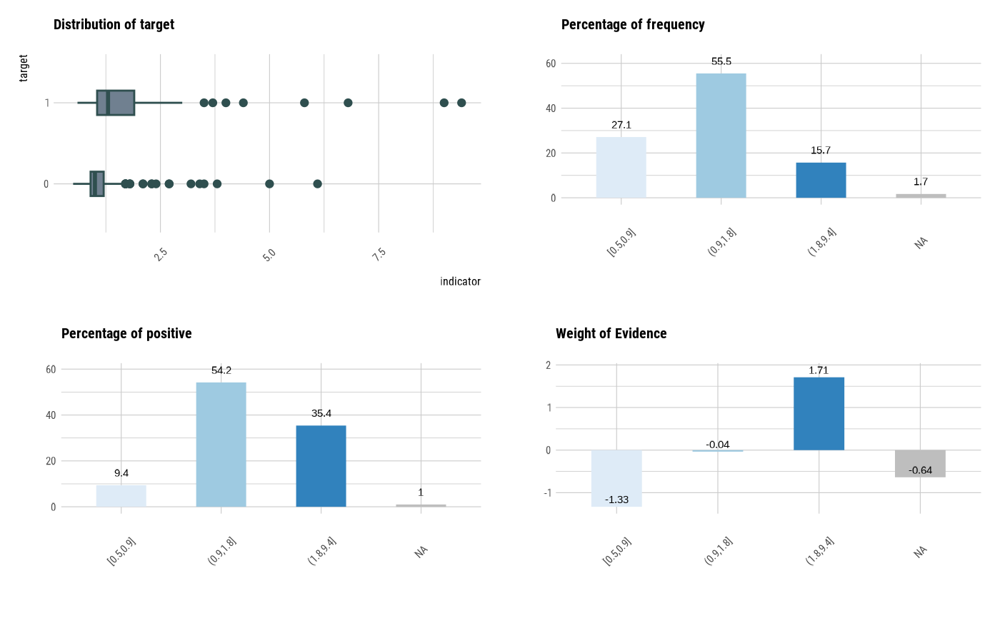
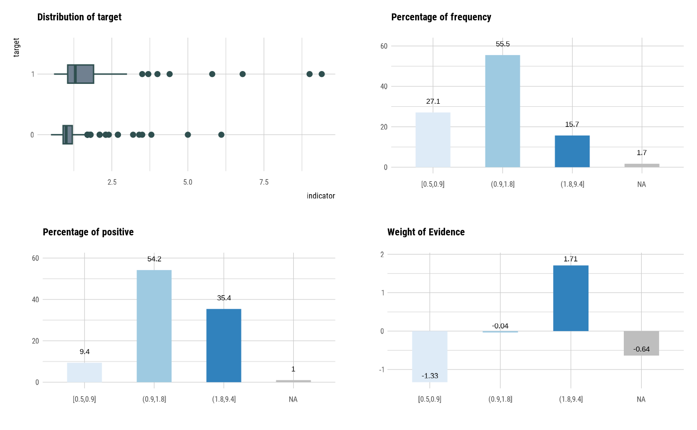

It generates plots for understand distribution, frequency, bad rate, and weight of evidence using optimal_bins.
See vignette("transformation") for an introduction to these concepts.
# S3 method for optimal_bins plot( x, type = c("all", "dist", "freq", "posrate", "WoE"), typographic = TRUE, rotate_angle = 0, ... )
Arguments
| x | an object of class "optimal_bins", usually, a result of a call to binning_by(). |
|---|---|
| type | character. options for visualization. Distribution ("dist"), Relateive Frequency ("freq"), Positive Rate ("posrate"), and Weight of Evidence ("WoE"). and default "all" draw all plot. |
| typographic | logical. Whether to apply focuses on typographic elements to ggplot2 visualization. The default is TRUE. if TRUE provides a base theme that focuses on typographic elements using hrbrthemes package. |
| rotate_angle | integer. specifies the rotation angle of the x-axis label. This is useful when the x-axis labels are long and overlap. The default is 0 to not rotate the label. |
| ... | further arguments to be passed from or to other methods. |
See also
Examples
# Generate data for the example heartfailure2 <- heartfailure heartfailure2[sample(seq(NROW(heartfailure2)), 5), "creatinine"] <- NA # optimal binning using binning_by() bin <- binning_by(heartfailure2, "death_event", "creatinine")#> Warning: The factor y has been changed to a numeric vector consisting of 0 and 1. #> 'Yes' changed to 1 (positive) and 'No' changed to 0 (negative).bin#> binned type: optimal #> number of bins: 3 #> x #> [0.5,0.9] (0.9,1.8] (1.8,9.4] <NA> #> 80 167 47 5#> ── Binning Table ──────────────────────── Several Metrics ── #> Bin CntRec CntPos CntNeg RatePos RateNeg Odds WoE IV #> 1 [0.5,0.9] 80 9 71 0.09375 0.34975 0.12676 -1.31660 0.33705 #> 2 (0.9,1.8] 167 52 115 0.54167 0.56650 0.45217 -0.04483 0.00111 #> 3 (1.8,9.4] 47 34 13 0.35417 0.06404 2.61538 1.71027 0.49620 #> 4 <NA> 5 1 4 0.01042 0.01970 0.25000 -0.63744 0.00592 #> 5 Total 299 96 203 1.00000 1.00000 0.47291 NA 0.84028 #> JSD AUC #> 1 0.03933 0.01639 #> 2 0.00014 0.20654 #> 3 0.05542 0.05203 #> 4 0.00073 0.01960 #> 5 0.09562 0.29457 #> #> ── General Metrics ───────────────────────────────────────── #> • Gini index : -0.41087 #> • IV (Jeffrey) : 0.84028 #> • JS (Jensen-Shannon) Divergence : 0.09562 #> • Kolmogorov-Smirnov Statistics : 0.28084 #> • HHI (Herfindahl-Hirschman Index) : 0.40853 #> • HHI (normalized) : 0.21137 #> • Cramer's V : 0.41553 #> #> ── Significance Tests ──────────────────── Chisquare Test ── #> Bin A Bin B statistics p_value #> 1 [0.5,0.9] (0.9,1.8] 11.50352 6.946445e-04 #> 2 (0.9,1.8] (1.8,9.4] 25.90425 3.587780e-07 #>